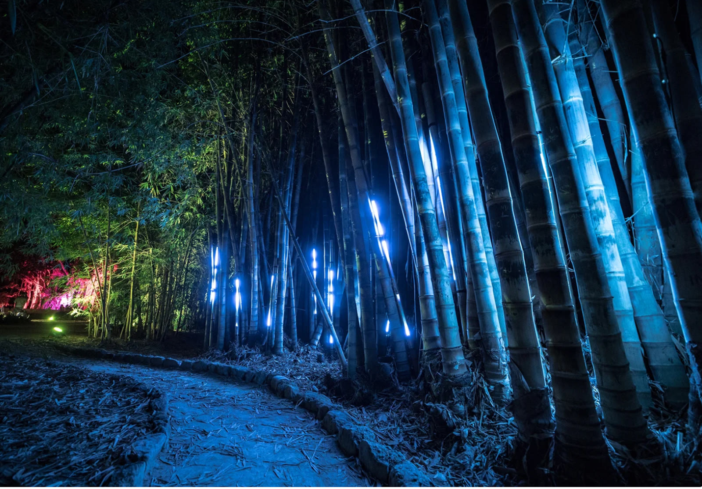
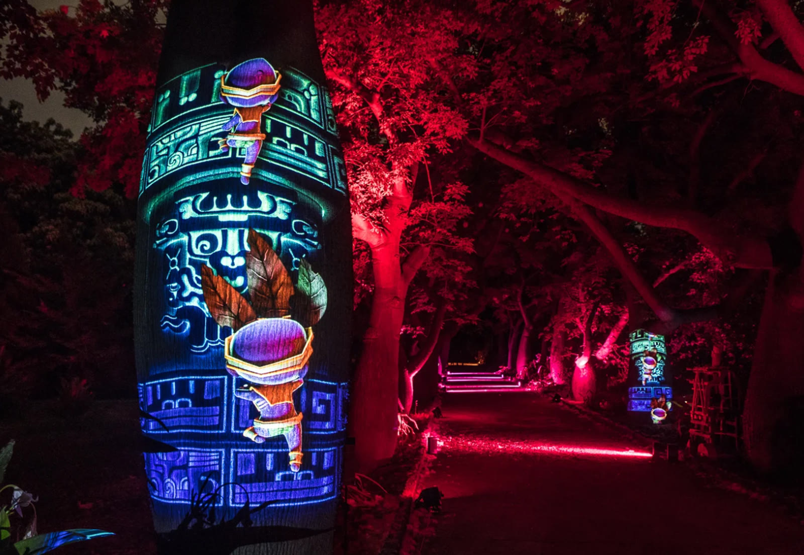
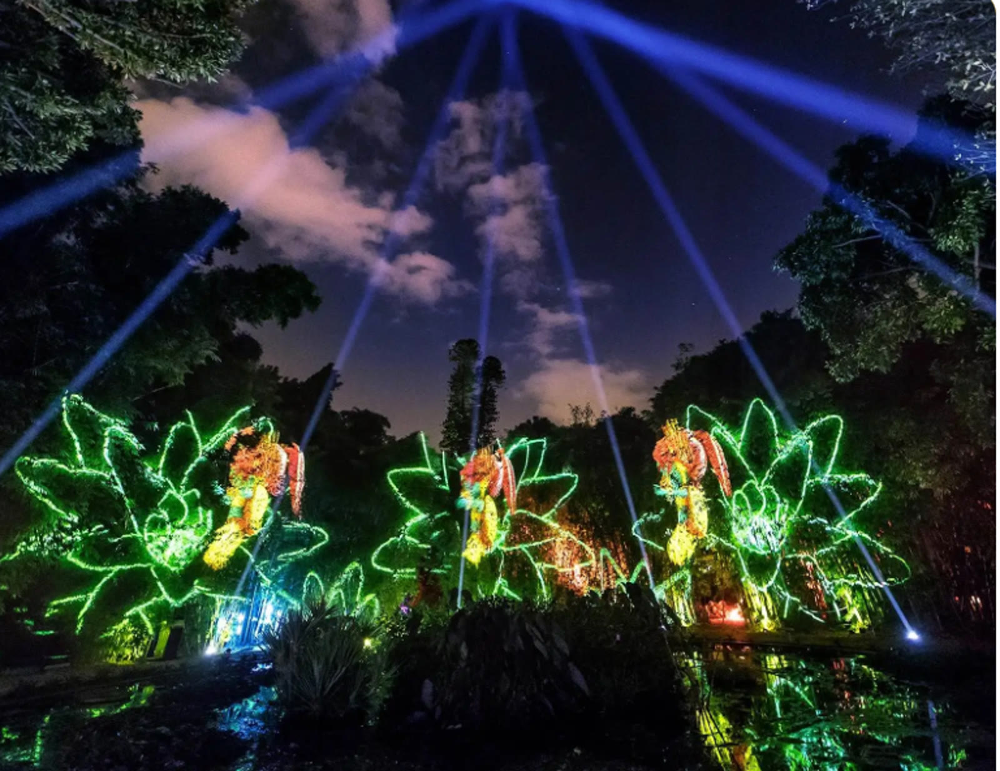

Anima Mundi
Un percorso notturno alla scoperta dei segreti che si celano all'interno di uno dei giardini botanici più importanti d'Italia. Un itinerario di nove tappe, ciascuna delle quali racconta un capitolo di una storia coinvolgente e innovativa, fatta di proiezioni, ologrammi, luci, suoni, interazioni e scenografie. Un'esperienza magica che prende vita all'interno di un mondo immaginario popolato dalle creature della luce, nascoste tra i tronchi nodosi e le maestose fronde dell'Orto Botanico.
Il primo spettacolo human-environment centred realizzato in Italia: in alcune tappe i visitatori sono stati coinvolti in prima persona, invitati a prendere parte all'esperienza attraverso interazioni con l'ambiente circostante, entrando così in una relazione stretta e reciproca con la narrazione.


